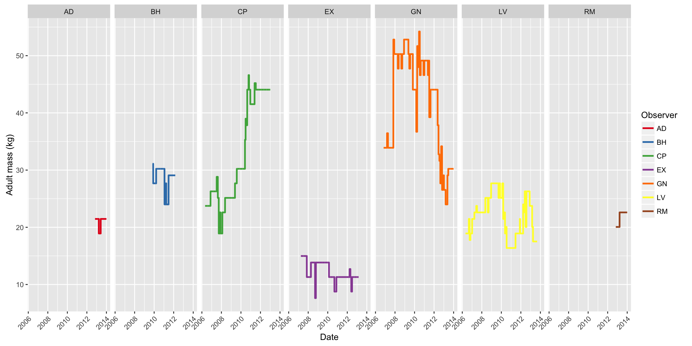
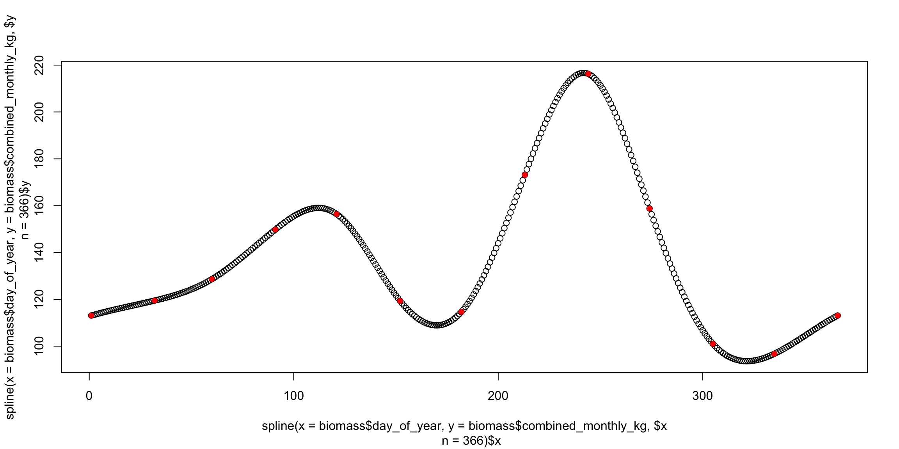

Source files available on Github
Contact me if you are interested in the raw data
Sys.setenv(TZ='UTC')
list.of.packages <- list("adehabitatHR", "plyr", "lubridate", "scales",
"reshape2", "ggplot2", "RColorBrewer", "rgdal",
"gridExtra", "rgeos", "colorspace", "dplyr", "tidyr",
"readr")
new.packages <- list.of.packages[!(list.of.packages %in% installed.packages()[,"Package"])]
if(length(new.packages)) install.packages(unlist(new.packages))
unlist(lapply(list.of.packages, library, character.only = T, logical.return = TRUE))
source("_source/brb-method.R")We first read the tracking data stored in the file ranging-waypoints.csv. This file is not made available here because some of the data belong to other reserchers.
# Read the file
all <- read.csv("_data/capuchin-home-ranges/ranging-waypoints.csv")
# Use only the points flagged for calculating home ranges.
# The purpose of this flag is to filter out duplicate points
# when two or more researchers were recording data intependently
# on the same focal group. We want only one point per group for each
# designated sampling interval. This flag was calculated separately
# in the database, but it's very simple: if there are multiple points
# for a given group and sampling time, take the point nearest to the
# designated time (usually these are not exaxtly on schedule because
# the points are recorded manually on the GPS units)
hr_pts <- filter(all, use_for_hr == TRUE)
# Parse some columns
da <- ymd_hms(hr_pts$timestamp)
hr_pts$group <- factor(hr_pts$group)
# Convert each group's total path to an ltraj trajectory
ran <- as.ltraj(xy = hr_pts[, c("x","y")],
date = da,
id = hr_pts$group,
infolocs = hr_pts[, c(3,6:12)])
# Plot the trajectories for each group
plot(ran, final = FALSE, addpoints = FALSE)Check data and plot researcher contributions
# Convert to data frame
ran_df <- tbl_df(ld(ran))
ran_df$date_of <- as.Date(ran_df$date)
date_begin <- min(ran_df$date_of)
date_end <- max(ran_df$date_of)
# Plot contributions
researcher_contrib <- ran_df %>%
group_by(id, observer, date_of) %>%
summarise(n_pts = n())
# There are a small number of cases where n_pts is greater that 26 (13 hrs)
# This obscures the plot a bit, so just set those cases to 26 pts for plotting
researcher_contrib[researcher_contrib$n_pts == 28, ]$n_pts <- 26
researcher_contrib[researcher_contrib$n_pts == 27, ]$n_pts <- 26
ggplot(researcher_contrib, aes(x = date_of,
y = (n_pts / 26), color = observer)) +
geom_hline(aes(yintercept = 0), color = "black") +
geom_hline(aes(yintercept = 1), color = "gray70", lty = 3) +
geom_segment(aes(xend = date_of, yend = 0)) +
theme_bw() +
scale_x_date(breaks = date_breaks("1 years"),
labels = date_format("%Y"),
limits = c(as.Date(date_begin),
as.Date(date_end))) +
scale_y_continuous(limits = c(0, 1), breaks = 1, labels = "13h") +
theme(panel.border = element_blank(),
panel.grid.major.y = element_blank(),
panel.grid.minor.y = element_blank(),
axis.text.y = element_text(size = 7),
legend.position = "bottom") +
scale_color_brewer(name = "Observer", palette = "Set3") +
labs(x = "Date", y = "") +
ggtitle("Observation Periods") +
facet_grid(id ~ ., drop = TRUE)Number of points by group and observer
ggplot(ran_df, aes(x = id, fill = observer)) +
geom_bar() +
scale_fill_brewer(name = "Observer", palette = "Set3") +
theme_bw() +
theme(legend.position = "bottom") +
labs(x = "Group", y = "Number of Points") +
coord_flip()give.n <- function(x){
return(c(y = 500, label = length(x)))
}
ggplot(ran_df, aes(x = observer, fill = observer)) +
geom_bar() +
scale_fill_brewer(name = "Observer", palette = "Set3") +
theme_bw() +
theme(legend.position = "bottom") +
stat_summary(aes(y = 500), fun.data = give.n, geom = "text", color = "black", size = 4) +
labs(x = "Group", y = "Number of Points")date_begin <- floor_date(min(da), unit = "year")
date_end <- ceiling_date(max(da), unit = "year") - days(1)
# monthly
start_vec <- seq(date_begin, date_end, "1 months")
end_vec <- start_vec[-1] - days(1)
end_vec <- c(end_vec, date_end)
mon_ints <- data.frame(block_type = "month",
date_begin = start_vec,
date_end = end_vec)
# eighth
start_vec1 <- seq(date_begin, date_end, "3 months")
start_vec2 <- seq((date_begin + months(1) + days(15)),
date_end, "3 months")
start_vec <- sort(c(start_vec1, start_vec2))
end_vec1 <- start_vec1[-1] - days(1)
end_vec2 <- start_vec2 - days(1)
end_vec <- sort(c(end_vec1, end_vec2, date_end))
eig_ints <- data.frame(block_type = "eighth",
date_begin = start_vec,
date_end = end_vec)
# quarter
start_vec <- seq(date_begin - months(2) + days(15),
date_end, "3 months")
end_vec <- start_vec[-1] - days(1)
end_vec <- c(end_vec, date_end)
qua_ints <- data.frame(block_type = "quarter",
date_begin = start_vec,
date_end = end_vec)
# half
start_vec <- seq(date_begin - months(2) + days(15),
date_end, "6 months")
end_vec <- start_vec[-c(1)] - days(1)
start_vec <- start_vec[-length(start_vec)]
hal_ints <- data.frame(block_type = "half",
date_begin = start_vec,
date_end = end_vec)
# year
start_vec <- seq(date_begin, date_end + days(1), "1 year")
end_vec <- end_vec <- start_vec[-c(1)] - days(1)
start_vec <- start_vec[-length(start_vec)]
yea_ints <- data.frame(block_type = "year",
date_begin = start_vec,
date_end = end_vec)
# Combine all scales
ob_ints <- rbind(mon_ints, eig_ints, qua_ints, hal_ints, yea_ints)
ob_all <- NULL
# Create scale entry for each group for every possible time interval from
# start of study to end of study
for(i in 1:length(levels(ran_df$id)))
{
temp <- cbind(ob_ints, rep(levels(ran_df$id)[i], times = nrow(ob_ints)))
names(temp)[4] <- "id"
ob_all <- rbind(ob_all, temp)
}ob_all$nb_reloc <- 0
# rearrange
ob_all <- select(ob_all, block_type, id, nb_reloc, date_begin, date_end)
ob_all <- tbl_df(ob_all)
# Now we need to see how many location points actually lie in each time interval
# for each group. We do this by joining to ran_df
temp <- left_join(ob_all, ran_df)## Joining, by = "id"# Create date interval for filtering
temp$date_interval <- interval(temp$date_begin, temp$date_end)
# Count number of points for each group in each date interval
ob_all <- temp %>%
filter(date_of %within% date_interval) %>%
group_by(id, block_type, date_begin, date_end) %>%
summarise(nb_reloc = n())Here we remove periods with few locations
# Now we remove a few intervals for which the data are too sparse (too few pts)
# I define this as follows:
# - 96 pts (~8 full days) for monthly home range
# - 192 pts (~16 full days) for quarterly home range
# - 384 pts (~32 full days) for half-yearly home range
# - 768 pts (~64 full days) for annual home range
ob <- ob_all %>%
filter((block_type == "month" & nb_reloc >= 96) |
(block_type == "quarter" & nb_reloc >= 192) |
(block_type == "half" & nb_reloc >= 384) |
(block_type == "year" & nb_reloc >= 768))
ob$ints <- interval(ob$date_begin, ob$date_end)
ob <- select(ob, -date_begin, -date_end)## Adding missing grouping variables: `date_begin`Plots of seasonal ranges to be included in the study
date_begin <- min(int_start(ob$ints))
date_end <- max(int_end(ob$ints))
temp <- ran_df %>%
group_by(id, date_of) %>%
summarise(n_pts = n())
temp[temp$n_pts == 28, ]$n_pts <- 26
temp[temp$n_pts == 27, ]$n_pts <- 26
p1 <- ggplot(temp, aes(x = date_of,
y = (n_pts / 26), color = id)) +
geom_hline(aes(yintercept = 0), color = "black") +
geom_hline(aes(yintercept = 1), color = "gray70", lty = 3) +
geom_segment(aes(xend = date_of, yend = 0), alpha = 0.5) +
theme_bw() +
scale_x_date(breaks = date_breaks("1 years"),
labels = date_format("%Y"),
limits = c(as.Date(date_begin),
as.Date(date_end))) +
scale_y_continuous(limits = c(0, 1), breaks = 1, labels = "13h") +
theme(panel.border = element_blank(),
panel.grid.major.y = element_blank(),
panel.grid.minor.y = element_blank(),
axis.text.y = element_text(size = 7),
legend.position = "bottom") +
scale_color_discrete(name = "Group", guide = "none") +
labs(x = "Date", y = "") +
ggtitle("Observation Periods") +
facet_grid(id ~ ., drop = TRUE)
## Time Periods
p2 <- ggplot(ob, aes(x = int_start(ints) + days(3),
y = factor(id, levels = rev(levels(id))),
color = id)) +
geom_segment(aes(xend = int_end(ints) - days(3),
yend = id),
size = 2) +
theme_bw() +
scale_color_discrete(guide = "none") +
theme(panel.border = element_rect(fill = NA, colour = "grey50"),
axis.text.y = element_text(size = 8)) +
scale_x_datetime(breaks = date_breaks("1 years"),
labels = date_format("%Y"),
limits = c(date_begin, date_end)) +
facet_grid(block_type ~ .) +
labs(x = "Date", y = "") +
ggtitle("Included HR intervals")
grid.arrange(p1, p2)
******
# Use group data pulled from database on 2013-09-23
c_groups <- tbl_df(read.csv("_data/capuchin-home-ranges/groups-query.csv"))
# Include only alive or immigrated animals
tcomp <- filter(c_groups, status == "Alive" | status == "Immigrated")
# Include only sexually mature animals
comp <- filter(tcomp, age == "Adult" | age == "SubAdult")
# Inlcude only study group
comp <- filter(comp, id %in% c("AD", "BH", "CP", "EX", "GN", "LV", "RM"))
comp$date_of <- as.Date(comp$date_of)
# Round the date to find census date
comp$census_date <- round_date(comp$date_of, unit = "month")
# Convert to age/sex and reshape
comp <- unite(comp, age_sex, age, sex)
# Reshape
comp_wide <- dcast(comp, id + date_of ~ age_sex,
value.var = "n",
fun.aggregate = sum,
drop = TRUE,
fill = 0)
comp_wide$id <- droplevels(comp_wide$id)
comp_wide <- tbl_df(comp_wide)
# Empty data frame for final composition data
final_comps <- list(length(levels(comp_wide$id)))
# Define limits, pull group comp data for each group, and interpolate values
for (i in 1:length(levels(comp_wide$id)))
{
# Make temporary subsets
temp_ob <- subset(ob, id == levels(comp_wide$id)[i])
temp_comp <- subset(comp_wide, id == levels(comp_wide$id)[i])
# Find date limits
date_begin <- floor_date(min(int_start(temp_ob$ints)), unit = "month")
date_end <- ceiling_date(max(int_end(temp_ob$ints)), unit = "month")
# Generate even sequence of first-of-month dates
date_seq <- as.Date(seq(date_begin, date_end, "days"))
# Create daily data frame for composition values
comp_frame <- data.frame(id = levels(comp_wide$id)[i],
census_date = date_seq,
Adult_F = NA,
Adult_M = NA,
SubAdult_F = NA,
SubAdult_M = NA)
# Fill in census dates with actual information
comp_frame$Adult_F <- temp_comp[match(comp_frame$census_date,
temp_comp$date_of), ]$Adult_F
comp_frame$Adult_M <- temp_comp[match(comp_frame$census_date,
temp_comp$date_of), ]$Adult_M
comp_frame$SubAdult_F <- temp_comp[match(comp_frame$census_date,
temp_comp$date_of), ]$SubAdult_F
comp_frame$SubAdult_M <- temp_comp[match(comp_frame$census_date,
temp_comp$date_of), ]$SubAdult_M
# Interpolate between census dates for each day
comp_frame$s_Adult_F <- approx(x = comp_frame$census_date,
y = comp_frame$Adult_F,
n = nrow(comp_frame),
method = "constant")$y
comp_frame$s_Adult_M <- approx(x = comp_frame$census_date,
y = comp_frame$Adult_M,
n = nrow(comp_frame),
method = "constant")$y
comp_frame$s_SubAdult_F <- approx(x = comp_frame$census_date,
y = comp_frame$SubAdult_F,
n = nrow(comp_frame),
method = "constant")$y
comp_frame$s_SubAdult_M <- approx(x = comp_frame$census_date,
y = comp_frame$SubAdult_M,
n = nrow(comp_frame),
method = "constant")$y
comp_frame <- select(comp_frame, id, date_of = census_date, matches("s_"))
final_comps[[i]] <- comp_frame
}
final_comps <- bind_rows(final_comps)
# Fix names
names(final_comps) <- c("id", "date_of", "n_af", "n_am", "n_saf", "n_sam")
final_comps$date_of <- ymd(final_comps$date_of)
# Calculate mean adult mass values for each HR interval
ob$adult_mass <- 0
for (i in 1:nrow(ob)) {
g1 <- mean(final_comps[which(final_comps$date_of %within% ob[i,]$ints &
final_comps$id == ob[i, ]$id), ]$n_af)
g2 <- mean(final_comps[which(final_comps$date_of %within% ob[i,]$ints &
final_comps$id == ob[i, ]$id), ]$n_am)
g3 <- mean(final_comps[which(final_comps$date_of %within% ob[i,]$ints &
final_comps$id == ob[i, ]$id), ]$n_sam)
g4 <- mean(final_comps[which(final_comps$date_of %within% ob[i,]$ints &
final_comps$id == ob[i, ]$id), ]$n_saf)
ob[i, ]$adult_mass <- ((g1 + g3 + g4) * 2.54) + (g2 *3.68)
}
# Plot mass over time for each group
final_comps$adult_mass <- ((final_comps$n_af +
final_comps$n_saf +
final_comps$n_sam) * 2.54) +
(final_comps$n_am *3.68)
ggplot(final_comps, aes(x = date_of, y = adult_mass, color = id)) +
geom_line(size = 1) +
scale_color_brewer(name = "Observer", palette = "Set1") +
labs(x = "Date", y = "Adult mass (kg)") +
theme(axis.text.x = element_text(angle = 45, hjust = 1)) +
facet_grid(. ~ id)
Full details here: http://people.ucalgary.ca/~facampos/data/fruit/
# Load data
biomass <- read.csv("_data/capuchin-home-ranges/biomass-monthly.csv")
# Add one additional january to the end for a complete year
biomass <- rbind(biomass, biomass[1, ])
# Create actual dates
biomass$month_num <- match(biomass$month_of, month.abb)
biomass$date_of <- ymd(paste("2011", biomass$month_num, "1", sep = "-"))
biomass$day_of_year <- yday(biomass$date_of)
# Change last day_of_year to 366 and rearrange
biomass[13, ]$day_of_year <- 366
biomass <- biomass[, c(1, 4, 5, 2)]
# Spline
biomass_daily <- data.frame(day_of_year = seq(1:366))
biomass_daily$spline <- spline(x = biomass$day_of_year,
y = biomass$combined_monthly_kg, n = 366)$y
# Spline plot
plot(spline(x = biomass$day_of_year,
y = biomass$combined_monthly_kg, n = 366))
points(x = biomass$day_of_year,
y = biomass$combined_monthly_kg, col = "red", pch = 16)
# Extend over complete range of study dates
start_date <- as.Date(min(int_start(ob$ints)))
end_date <- as.Date(max(int_end(ob$ints)))
biomass_dates <- data.frame(date_of = seq(start_date, end_date, by = 1))
biomass_dates$day_of_year <- yday(biomass_dates$date_of)
biomass_dates <- merge(biomass_dates, biomass_daily,
by.x = "day_of_year",
by.y = "day_of_year")[, c(2,1,3)]
biomass_dates <- biomass_dates[with(biomass_dates, order(date_of)), ]
biomass_daily$date_of <- as.POSIXct(as.Date(biomass_daily$day_of_year - 1, origin = "2011-01-01"))
biomass[13, ]$date_of <- biomass[13, ]$date_of + years(1)
biomass_dates$date_of <- ymd(as.character(biomass_dates$date_of))
# Calculate mean fruit biomass values for each HR interval
ob$mean_fruit <- 0
for (i in 1:nrow(ob)) {
ob[i, ]$mean_fruit <- mean(biomass_dates[which(biomass_dates$date_of %within%
ob$ints[i]), ]$spline)
}Full details here: http://people.ucalgary.ca/~facampos/data/weather/
wea <- read.csv("_data/capuchin-home-ranges/filled-filtered-weather.csv")
wea$date_of <- ymd(as.character(wea$date_of))
ob$mean_tmax <- 0
ob$mean_tmin <- 0
ob$mean_rainfall <- 0
# get mean max temperature for each HR interval
for (i in 1:nrow(ob)) {
ob[i, ]$mean_tmax <- mean(wea[which(wea$date_of %within%
ob$ints[i]), ]$tmax, na.rm = TRUE)
ob[i, ]$mean_tmin <- mean(wea[which(wea$date_of %within%
ob$ints[i]), ]$tmin, na.rm = TRUE)
ob[i, ]$mean_rainfall <- mean(wea[which(wea$date_of %within%
ob$ints[i]), ]$rain, na.rm = TRUE)
}lc <- readGDAL(fname = "_data/capuchin-home-ranges/LC-2011-03-06.tif")
fullgrid(lc) <- FALSE
names(lc) <- "habitat"
ndvi <- readGDAL(fname = "_data/capuchin-home-ranges/NDVI-2011-03-06.tif")
fullgrid(ndvi) <- FALSE
names(ndvi) <- "ndvi"
bounds <- ddply(ran_df,
"id",
function(df) c(min(df$x) - 100,
max(df$x) + 100,
min(df$y) - 100,
max(df$y) + 100))
names(bounds) <- c("id","xmin","xmax","ymin","ymax")
xym <- as.matrix(rbind(
c(min(bounds$xmin), max(bounds$ymax)),
c(max(bounds$xmax), max(bounds$ymax)),
c(max(bounds$xmax), min(bounds$ymin)),
c(min(bounds$xmin), min(bounds$ymin)),
c(min(bounds$xmin), max(bounds$ymax))))
p <- Polygon(xym)
ps <- Polygons(list(p),1)
clip_rect <- SpatialPolygons(list(ps))
proj4string(clip_rect) <- CRS("+proj=utm +zone=16 +datum=WGS84 +units=m +no_defs +ellps=WGS84 +towgs84=0,0,0")
hab <- lc[clip_rect, drop = TRUE]
age <- ndvi[clip_rect, drop = TRUE]
# Create HCL color palette for land cover maps
lc_grad <- colorRampPalette(colors = rev(heat_hcl(4, h = c(130, 70),
c = c(80, 30),
l = c(45, 95),
power = c(1/5, 2))))(4)
# image(hab, col = brewer.pal(4, "YlGn"))
image(hab, col = lc_grad)ob$area_core <- 0
ob$area_primary <- 0
ob$area_total <- 0
ob$ndvi_core <- 0
ob$ndvi_primary <- 0
ob$ndvi_total <- 0
ob$ndvi_high <- 0
ob$ndvi_medium <- 0
ob$ndvi_low <- 0
ud <- list()
vv <- list()
# Calculate diffusion values
for(i in 1:length(levels(ran_df$id)))
{
vv_id <- levels(ran_df$id)[i]
vv[[i]] <- BRB.D(ran[id = vv_id],
Tmax = 90*60,
Lmin = 5,
habitat = hab,
activity = NULL)
names(vv[[i]]) <- levels(ran_df$id)[i]
}
# Warning: VERY SLOW!!!!
# Takes about 25 minutes on my laptop (2.10 GHz Core2 Duo CPU w/ 4 GB ram)
# Can repeat for recursion / intensity distributions (t = "RD" or t = "ID")
for(i in 1:nrow(ob)){
temp <- suppressWarnings(area.BRB(
x = ran[id = ob[i, ]$id],
start.date = as.POSIXct(as.Date(int_start(ob[i, ]$ints))),
end.date = as.POSIXct(as.Date(int_end(ob[i, ]$ints)) + days(1)),
hab = hab,
iso = c(50, 70, 95),
t = "UD",
vv = vv[[ob[i, ]$id]]
))
ob[i, ]$area_core <- temp$hr$hr50$area
ob[i, ]$area_primary <- temp$hr$hr70$area
ob[i, ]$area_total <- temp$hr$hr95$area
ob[i, ]$ndvi_core <- temp$ndvi$ndvi50
ob[i, ]$ndvi_primary <- temp$ndvi$ndvi70
ob[i, ]$ndvi_total <- temp$ndvi$ndvi95
ob[i, ]$ndvi_high <- temp$ndvi$ndvi50
ob[i, ]$ndvi_medium <- mean(ndvi[gDifference(temp$hr$hr70,
temp$hr$hr50), ]$ndvi,
na.rm = TRUE)
ob[i, ]$ndvi_low <- mean(ndvi[gDifference(temp$hr$hr95,
temp$hr$hr70), ]$ndvi,
na.rm = TRUE)
ud[[i]] <- temp$ud
}# Create directory to hold output files
mainDir <- getwd()
subDir1 <- "HomeRanges"
subDir2 <- "ud"
dir.create(file.path(mainDir, subDir1), showWarnings = FALSE)
dir.create(file.path(mainDir, subDir1, subDir2), showWarnings = FALSE)
# Repeat for each type of distribution
for (i in 1:length(ud)) {
writeGDAL(ud[[i]][1],
fname = paste("HomeRanges/ud/",
sprintf('%03d', i),
"_",ob[i,]$id,"_",
ob[i,]$block_type, "_",
as.Date(int_start(ob[i, ]$ints)), "_",
as.Date(int_end(ob[i, ]$ints)), ".tif",
sep = ""))
}ob$mean_tmax_s <- scale(ob$mean_tmax)
ob$mean_fruit_s <- scale(ob$mean_fruit)
ob$adult_mass_s <- scale(ob$adult_mass)
ob$start <- int_start(ob$ints)
ob$end <- int_end(ob$ints)
ob$rowid <- as.numeric(rownames(ob))
# Fix problem wiht Sept. 2008 weather gap
ob[is.na(ob$mean_tmax) & ob$block_type == "month" & (yday(ob$start) == 245 | yday(ob$start) == 244), ]$mean_tmax <- mean(subset(ob, block_type == "month" & (yday(start) == 245 | yday(start) == 244))$mean_tmax, na.rm = TRUE)
ob[is.na(ob$mean_tmin) & ob$block_type == "month" & (yday(ob$start) == 245 | yday(ob$start) == 244), ]$mean_tmin <- mean(subset(ob, block_type == "month" & (yday(start) == 245 | yday(start) == 244))$mean_tmin, na.rm = TRUE)
# Write to csv for later use
write.csv(ob, "ob.csv", row.names = FALSE)Linear mixed models of home range size and composition
Sys.setenv(TZ = 'UTC')
list.of.packages <- list("lme4", "plyr", "lubridate", "scales", "reshape2",
"ggplot2", "RColorBrewer", "MuMIn", "multcomp",
"colorspace")
new.packages <- list.of.packages[!(list.of.packages %in% installed.packages()[,"Package"])]
if (length(new.packages)) install.packages(unlist(new.packages))
lapply(list.of.packages, require, character.only = T)
options(na.action = "na.fail")# Read hr data from csv file created 2013-10-09
# Skips the entire home range calculation step
# Must redo if new data are added
ob <- read.csv("_data/capuchin-home-ranges/ob.csv")
ob$ints <- interval(start = ob$start, end = ob$end)
### Subset
mon <- subset(ob, block_type == "month")
qua <- subset(ob, block_type == "quarter")
hal <- subset(ob, block_type == "half")
yea <- subset(ob, block_type == "year")# Loop over scale/zone combinations and apply model selection
# Not a very elegant solution, but whatevs..
df_set <- list(mon, qua, hal)
df_set_names <- c("mon", "qua", "hal")
y_set <- c("area_core", "area_primary", "area_total")
# Blank dfs for storing results
area_model_results <- NULL
area_selection_table <- NULL
for (i in 1:length(df_set)) {
for (j in 1:length(y_set)) {
# Run models
m1 <- lmer(log(df_set[[i]][, y_set[j]]) ~ sqrt(nb_reloc) +
(1|id),
REML = FALSE, data = df_set[[i]])
m2 <- lmer(log(df_set[[i]][, y_set[j]]) ~ sqrt(nb_reloc) +
mean_tmax_s + (1|id),
REML = FALSE, data = df_set[[i]])
m3 <- lmer(log(df_set[[i]][, y_set[j]]) ~ sqrt(nb_reloc) +
mean_fruit_s + (1|id),
REML = FALSE, data = df_set[[i]])
m4 <- lmer(log(df_set[[i]][, y_set[j]]) ~ sqrt(nb_reloc) +
adult_mass_s + (1|id),
REML = FALSE, data = df_set[[i]])
m5 <- lmer(log(df_set[[i]][, y_set[j]]) ~ sqrt(nb_reloc) +
mean_tmax_s + mean_fruit_s + (1|id),
REML = FALSE, data = df_set[[i]])
m6 <- lmer(log(df_set[[i]][, y_set[j]]) ~ sqrt(nb_reloc) +
mean_tmax_s + adult_mass_s + (1|id),
REML = FALSE, data = df_set[[i]])
m7 <- lmer(log(df_set[[i]][, y_set[j]]) ~ sqrt(nb_reloc) +
mean_fruit_s + adult_mass_s + (1|id),
REML = FALSE, data = df_set[[i]])
m8 <- lmer(log(df_set[[i]][, y_set[j]]) ~ sqrt(nb_reloc) +
mean_tmax_s + mean_fruit_s + adult_mass_s + (1|id),
REML = FALSE, data = df_set[[i]])
# Create model selection table dataframe
temp <- suppressWarnings(model.sel(list(m1, m2, m3, m4, m5, m6, m7, m8)))
temp$m_name <- row.names(temp)
temp$data_set <- rep(df_set_names[i], times = nrow(temp))
temp$zone <- rep(y_set[j], times = nrow(temp))
# Add to area_selection_table
area_selection_table <- rbind(area_selection_table, data.frame(temp))
# Obtain average model
fma <- suppressWarnings(model.avg(temp, fit = TRUE))
avg_model <- data.frame(summary(fma)[["coefmat.subset"]])
avg_model <- cbind(term = rownames(avg_model), avg_model)
avg_model$term <- rownames(avg_model)
rownames(avg_model) <- NULL
ci <- data.frame(confint(fma))
ci$term <- rownames(ci)
rownames(ci) <- NULL
avg_model <- inner_join(avg_model, ci, by = "term")
imp <- melt(fma$importance)
imp$term <- rownames(imp)
rownames(imp) <- NULL
avg_model <- inner_join(avg_model, imp, by = "term")
names(avg_model) <- c("term", "estimate", "std_error", "adjusted_se", "Z Value",
"P Value", "lower_ci", "upper_ci", "importance")
# Add to area_model_results
avg_model$response <- y_set[j]
avg_model$scale <- df_set_names[i]
area_model_results <- rbind(area_model_results, avg_model)
}
}area_model_results$response <-
factor(revalue(area_model_results$response,
c("area_core" = "Core",
"area_primary" = "Primary",
"area_total" = "Total")),
levels = c("Core",
"Primary",
"Total"))
area_model_results$scale <-
factor(revalue(area_model_results$scale,
c("mon" = "Monthly",
"qua" = "Quarterly",
"hal" = "Half-yearly")),
levels = c("Monthly",
"Quarterly",
"Half-yearly"))
area_model_results$term <-
factor(revalue(area_model_results$term,
c("adult_mass_s" = "Group mass",
"mean_fruit_s" = "Fruit biomass",
"mean_tmax_s" = "Mean max temperature",
"sqrt(nb_reloc)" = "Sqrt num locations")),
levels = c("Sqrt num locations",
"Mean max temperature",
"Fruit biomass",
"Group mass"))# Exclude half-year
ggplot(subset(area_model_results, scale != "Half-yearly" &
term != "Sqrt num locations"),
aes(x = term, color = importance)) +
geom_hline(aes(yintercept = 0), lty = 2, color = "gray50") +
geom_errorbar(aes(ymax = lower_ci,
ymin = upper_ci),
width = 0.2, size = 0.75) +
geom_segment(aes(y = estimate + std_error,
yend = estimate - std_error,
xend = term),
size = 1.5) +
geom_point(aes(y = estimate),
size = 1.5,
color = "black") +
labs(y = "Regression estimates", x = "") +
scale_color_gradientn(name = "Importance",
colours = rev(heat_hcl(12,
c = c(80, 30),
l = c(30, 90),
power = c(1/5, 2))),
values = seq(0, 1, length.out = 12),
rescaler = function(x, ...) x,
oob = identity, limits = c(0,1)) +
theme_bw() +
theme(legend.position = "bottom",
panel.border = element_rect(fill = NA, colour = "grey50"),
axis.text.x = element_text(size = 8),
axis.text.y = element_text(size = 8)) +
facet_grid(scale ~ response) +
coord_flip()df_set <- list(mon, qua, hal)
df_set_names <- c("mon", "qua", "hal")
y_set <- c("ndvi_high", "ndvi_medium", "ndvi_low")
# Blank dfs for storing results
ndvi_model_results <- NULL
ndvi_selection_table <- NULL
for (i in 1:length(df_set)) {
for (j in 1:length(y_set)) {
# Run models
m1 <- lmer(log(df_set[[i]][, y_set[j]]) ~ 1 + (1|id),
REML = FALSE, data = df_set[[i]])
m2 <- lmer(log(df_set[[i]][, y_set[j]]) ~ mean_tmax_s + (1|id),
REML = FALSE, data = df_set[[i]])
m3 <- lmer(log(df_set[[i]][, y_set[j]]) ~ mean_fruit_s + (1|id),
REML = FALSE, data = df_set[[i]])
m4 <- lmer(log(df_set[[i]][, y_set[j]]) ~ adult_mass_s + (1|id),
REML = FALSE, data = df_set[[i]])
m5 <- lmer(log(df_set[[i]][, y_set[j]]) ~ mean_tmax_s + mean_fruit_s +
(1|id), REML = FALSE, data = df_set[[i]])
m6 <- lmer(log(df_set[[i]][, y_set[j]]) ~ mean_tmax_s + adult_mass_s +
(1|id), REML = FALSE, data = df_set[[i]])
m7 <- lmer(log(df_set[[i]][, y_set[j]]) ~ mean_fruit_s + adult_mass_s +
(1|id), REML = FALSE, data = df_set[[i]])
m8 <- lmer(log(df_set[[i]][, y_set[j]]) ~ mean_tmax_s + mean_fruit_s +
adult_mass_s + (1|id), REML = FALSE, data = df_set[[i]])
# Create model selection table dataframe
temp <- suppressWarnings(model.sel(list(m1, m2, m3, m4, m5, m6, m7, m8)))
temp$m_name <- row.names(temp)
temp$data_set <- rep(df_set_names[i], times = nrow(temp))
temp$zone <- rep(y_set[j], times = nrow(temp))
# Add to ndvi_selection_table
ndvi_selection_table <- rbind(ndvi_selection_table, data.frame(temp))
# Obtain average model
fma <- suppressWarnings(model.avg(temp, fit = TRUE))
avg_model <- data.frame(summary(fma)[["coefmat.subset"]])
avg_model <- cbind(term = rownames(avg_model), avg_model)
avg_model$term <- rownames(avg_model)
rownames(avg_model) <- NULL
ci <- data.frame(confint(fma))
ci$term <- rownames(ci)
rownames(ci) <- NULL
avg_model <- inner_join(avg_model, ci, by = "term")
imp <- melt(fma$importance)
imp$term <- rownames(imp)
rownames(imp) <- NULL
avg_model <- inner_join(avg_model, imp, by = "term")
names(avg_model) <- c("term", "estimate", "std_error", "adjusted_se", "Z Value",
"P Value", "lower_ci", "upper_ci", "importance")
# Add to area_model_results
avg_model$response <- y_set[j]
avg_model$scale <- df_set_names[i]
ndvi_model_results <- rbind(ndvi_model_results, avg_model)
}
}ndvi_model_results$response <-
factor(revalue(ndvi_model_results$response,
c("ndvi_high" = "High Use",
"ndvi_medium" = "Medium Use",
"ndvi_low" = "Low Use")),
levels = c("High Use",
"Medium Use",
"Low Use"))
ndvi_model_results$scale <-
factor(revalue(ndvi_model_results$scale,
c("mon" = "Monthly",
"qua" = "Quarterly",
"hal" = "Half-yearly")),
levels = c("Monthly",
"Quarterly",
"Half-yearly"))
ndvi_model_results$term <-
factor(revalue(ndvi_model_results$term,
c("adult_mass_s" = "Group mass",
"mean_fruit_s" = "Fruit biomass",
"mean_tmax_s" = "Mean max temperature")),
levels = c("Mean max temperature",
"Fruit biomass",
"Group mass"))# Exclude half-year
ggplot(subset(ndvi_model_results, scale != "Half-yearly"),
aes(x = term, color = importance)) +
geom_hline(aes(yintercept = 0), lty = 2, color = "gray50") +
geom_errorbar(aes(ymax = lower_ci,
ymin = upper_ci),
width = 0.2, size = 0.75) +
geom_segment(aes(y = estimate + std_error,
yend = estimate - std_error,
xend = term),
size = 1.5) +
geom_point(aes(y = estimate),
size = 1.5,
color = "black") +
labs(y = "Regression estimates", x = "") +
scale_color_gradientn(name = "Importance",
colours = rev(heat_hcl(12,
h = c(130, 70),
c = c(80, 30),
l = c(30, 90),
power = c(1/5, 2))),
values = seq(0, 1, length.out = 12),
rescaler = function(x, ...) x,
oob = identity, limits = c(0,1)) +
theme_bw() +
theme(legend.position = "bottom",
panel.border = element_rect(fill = NA, colour = "grey50"),
axis.text.x = element_text(size = 8),
axis.text.y = element_text(size = 8)) +
facet_grid(scale ~ response) +
coord_flip()df_set <- list(mon, qua, hal, yea)
df_set_names <- c("mon", "qua", "hal", "yea")
# Blank dfs for storing results
zones_model_results <- NULL
zones_selection_table <- NULL
for (i in 1:length(df_set)) {
zones <- melt(df_set[[i]],
id.vars = c("id", "block_type", "rowid"),
measure.vars = c("ndvi_high", "ndvi_medium", "ndvi_low"))
zones$variable <- factor(zones$variable, levels = c("ndvi_medium",
"ndvi_low",
"ndvi_high"))
m1 <- lmer(value ~ variable + (1|rowid) + (1|id), data = zones)
temp <- dredge(m1, REML = FALSE)
# Multiple Comparisons of Means: Tukey Contrasts
summary(glht(m1, linfct = mcp(variable = "Tukey")))
# Create model selection table dataframe
temp$m_name <- row.names(temp)
temp$data_set <- rep(df_set_names[i], times = nrow(temp))
# Add to zones_selection_table
zones_selection_table <- rbind(zones_selection_table, data.frame(temp))
# Obtain average model
fma <- suppressWarnings(model.avg(temp, fit = TRUE))
avg_model <- data.frame(summary(fma)[["coefmat.subset"]])
avg_model <- cbind(term = rownames(avg_model), avg_model)
avg_model$term <- rownames(avg_model)
rownames(avg_model) <- NULL
ci <- data.frame(confint(fma))
ci$term <- rownames(ci)
rownames(ci) <- NULL
avg_model <- inner_join(avg_model, ci, by = "term")
names(avg_model) <- c("term", "estimate", "std_error", "adjusted_se", "Z Value",
"P Value", "lower_ci", "upper_ci")
# Add to zones_model_results
avg_model$scale <- df_set_names[i]
zones_model_results <- rbind(zones_model_results, avg_model)
}## Fixed term is "(Intercept)"
## Fixed term is "(Intercept)"
## Fixed term is "(Intercept)"
## Fixed term is "(Intercept)"# Remove intercept
zones_model_results <- subset(zones_model_results, term != "(Intercept)")zones_model_results$scale <-
factor(revalue(zones_model_results$scale,
c("mon" = "Monthly",
"qua" = "Quarterly",
"hal" = "Half-yearly",
"yea" = "Yearly")),
levels = c("Monthly",
"Quarterly",
"Half-yearly",
"Yearly"))
zones_model_results$term <-
factor(revalue(zones_model_results$term,
c("variablendvi_low" = "Low Use",
"variablendvi_high" = "High Use")),
levels = c("Low Use",
"High Use"))ggplot(zones_model_results, aes(x = term)) +
geom_hline(aes(yintercept = 0), lty = 2, color = "gray50") +
geom_errorbar(aes(ymax = lower_ci, ymin = upper_ci),
width = 0.2, size = 0.75, color = "gray10") +
geom_segment(aes(y = estimate + std_error,
yend = estimate - std_error,
xend = term),
size = 1.5, color = "gray10") +
geom_point(aes(y = estimate),
size = 1.5,
color = "white") +
scale_y_continuous(limits = c(-0.027, 0.027)) +
labs(y = "Regression estimates", x = "") +
theme_bw() +
theme(legend.position = "bottom",
panel.border = element_rect(fill = NA, colour = "grey50")) +
facet_grid(scale ~ .) +
coord_flip()